Bloom / Design study 01References, not a proposed website
A little care. Something you can almost hold.
Flowers, paper, a few words. The interface should help someone make a gesture, then get out of its way.
D01 / Prepared 20 October 2026 / Approved with refinement: more colorful, less rustic, more contemporary, less paper-like. These original material/type studies are research history, not approved brand tokens. No production screen has changed.
Happy birthday, Mira. Here's to the ordinary afternoons that turn into our favourite stories.
With love, Jules
01 / Correspondence, not a dashboard card
A readable sheet, generous margins, a quiet signature. Handwriting is optional, not the font for every label. The sender's actual words carry the emotion.
02 / Materials with a job
Paper layers separate gift and surroundings. Small shadows explain depth; they are not repeated around every control. No fake wood texture or mandatory wrapping animation.
Bloom / Bouquet studyWildflower FieldA loose gathering, for no particular occasion.
03 / Useful editorial hierarchy
One expressive type role, one clear interface role. Names and descriptions sit beside the object, not inside a stack of badges. These system fonts are placeholders, not a final type selection.
No need to reply. Just thinking of you today.
04 / Room for quieter feelings
Sympathy is not a birthday with its confetti turned off. Give the note space, use steady contrast, and avoid playful copy or forced audio. No automatic occasion classification.
Uncoated paper #f3efe5
Botanical ink #29372e
Wrapping paper #d0b58c
Muted foliage #aab09b
Small warm accent #943b43
The flowers supply most of the color. This is a material exercise, not a commitment to make every page beige or remove existing dark appearance.
02 / Annotated external references
Borrow principles, not someone's website.
Open the original sources below. Their photographs, logos, fonts, and layouts have not been imported, hotlinked, or licensed for Bloom. Observations describe the pages reviewed, not accessibility or performance endorsements.
Observed: the homepage puts worn tools, wood, cloth, and vessels before abstract brand claims.
Translate: let materials and a tangible gift establish the world. Leave behind: dark photographic navigation overlays and a full-screen scenic image that hides Bloom's purpose.
Observed: the reviewed campaign places paper goods among real objects, with visible surfaces, edges, and shadows; display type differs from utility labels.
Translate: make the note feel placed, not like a settings container. Leave behind: catalog-scale choice, promotions, and sign-in/shopping chrome.
Observed: large object photography, restrained interface type, and strong dividing rules. Its shop article credits physical-space photography separately.
Translate: a small label and one deliberate line can organize a surface without another rounded panel. Leave behind: a collector's catalog density or an oversized image with no clear action.
03 / Bloom's current asset collection
Keep the choice. Be honest about the image.
All 15 existing hero images are shown uncropped below. Each is 1024 x 1536. These are opaque scenes with backgrounds, not transparent bouquet cutouts. Presence in the repository does not establish ownership or permission; provenance remains unverified.
Red Rose ClassicBlush Peony Cloud
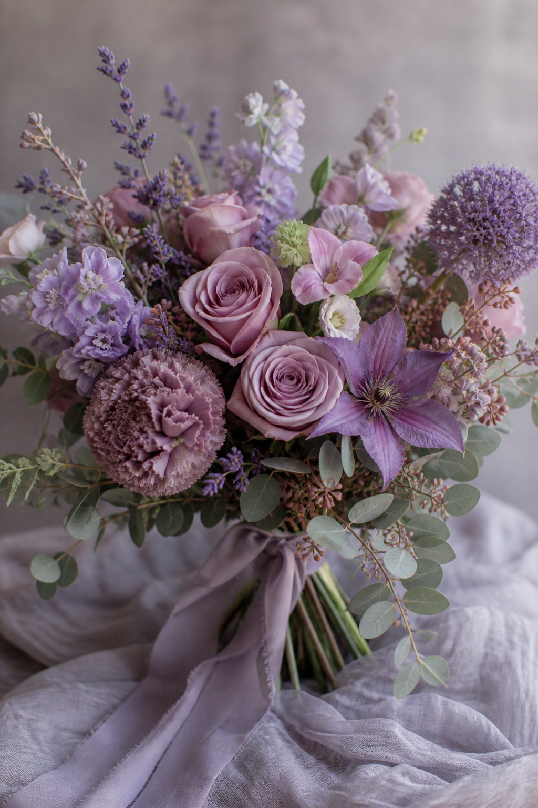
Dusty Lavender
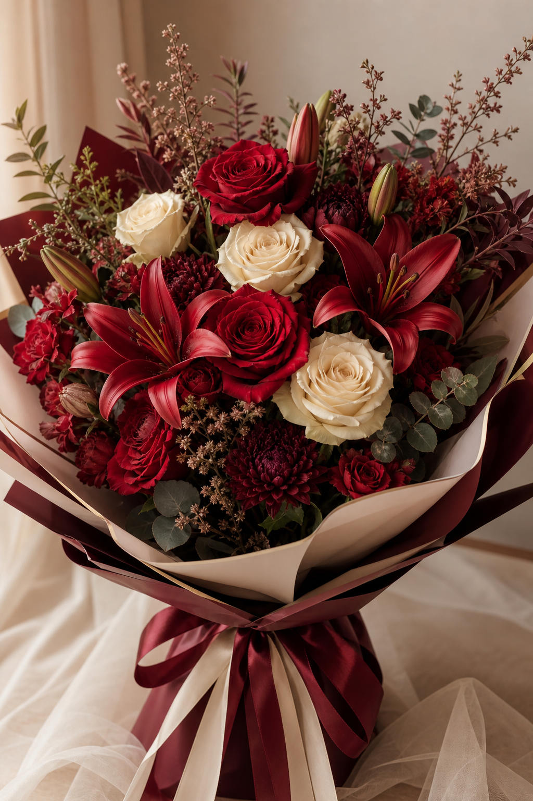
Crimson and Cream
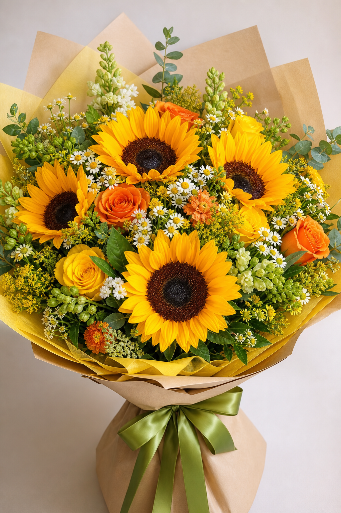
Sunflower Burst
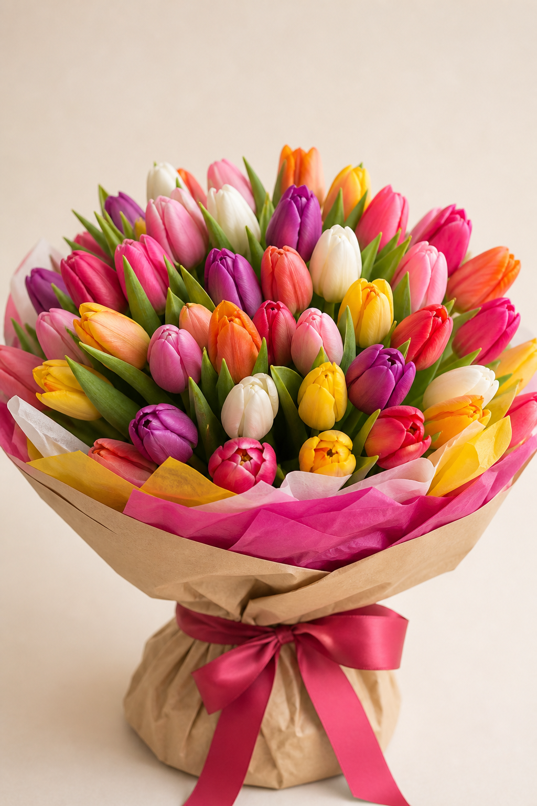
Tulip Riot
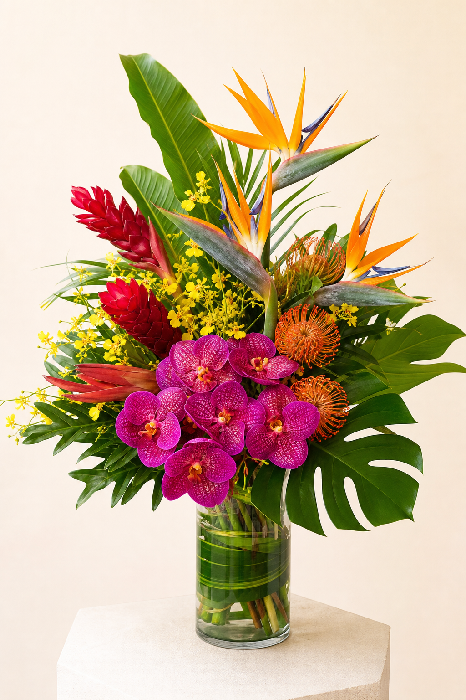
Tropical Bright
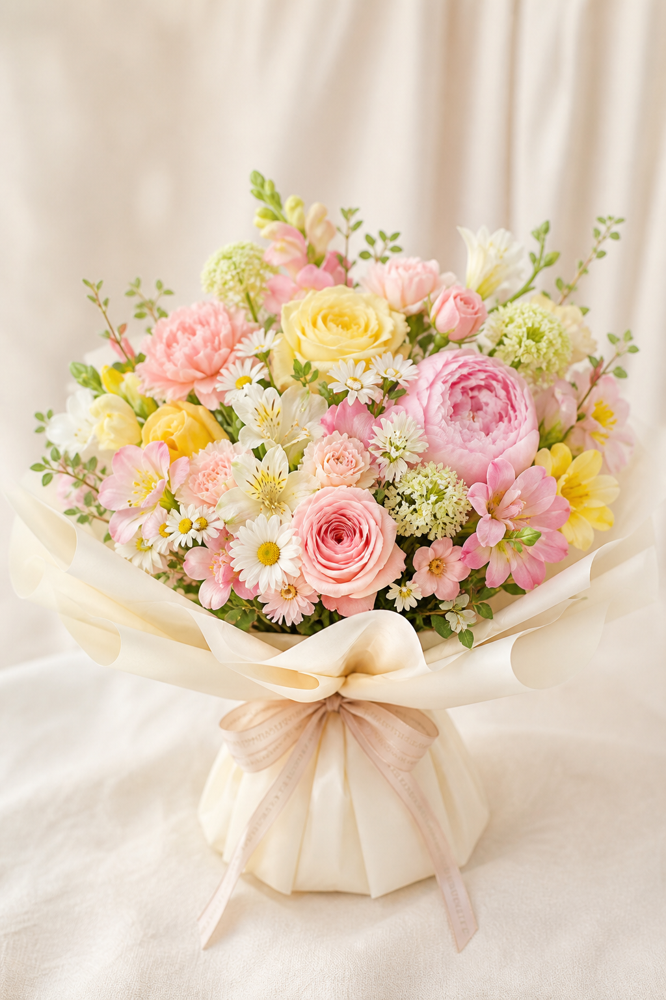
Pastel Spring
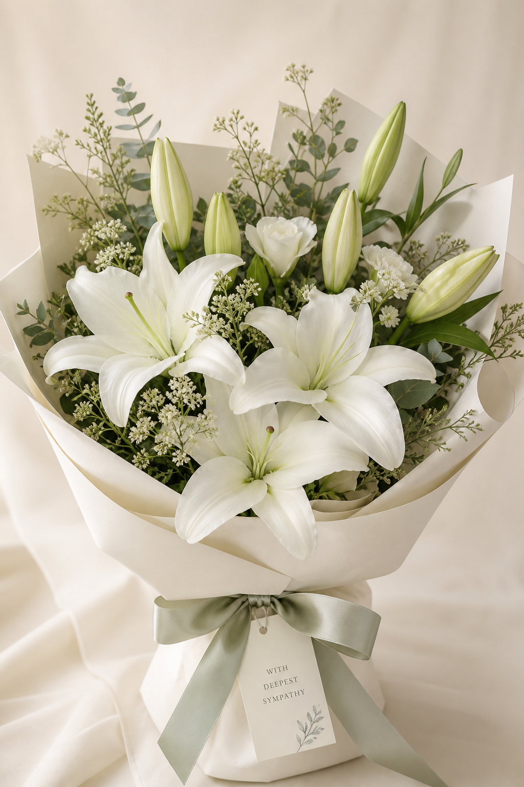
White Lily Still
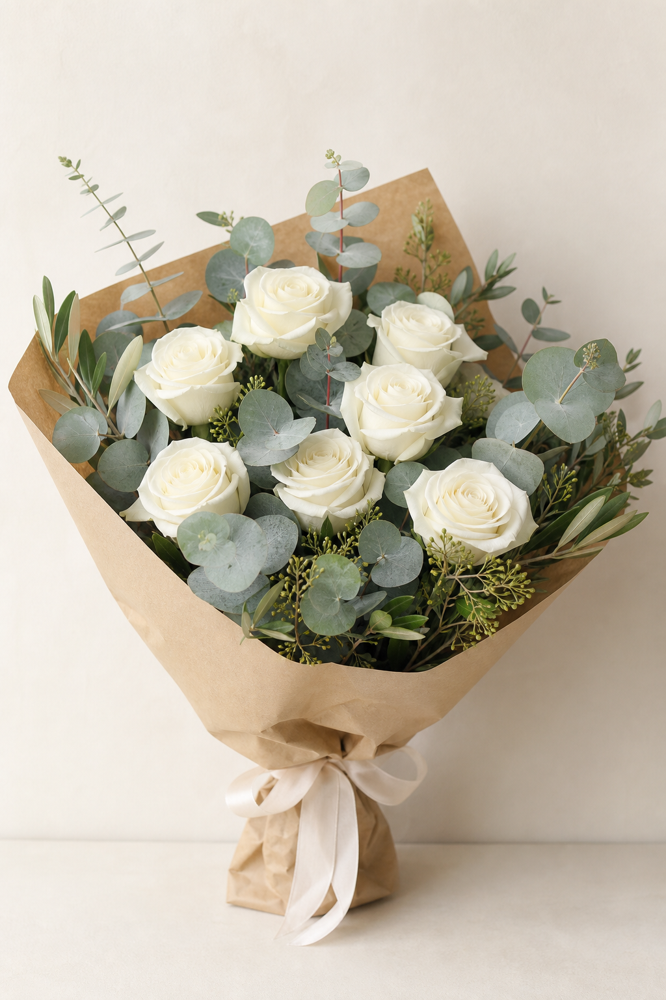
Eucalyptus and White
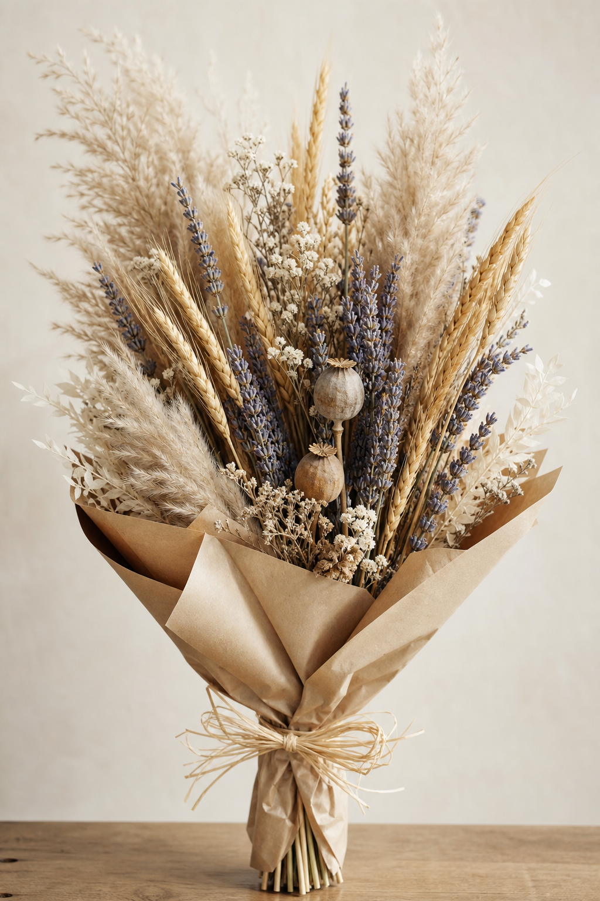
Dried Herbal
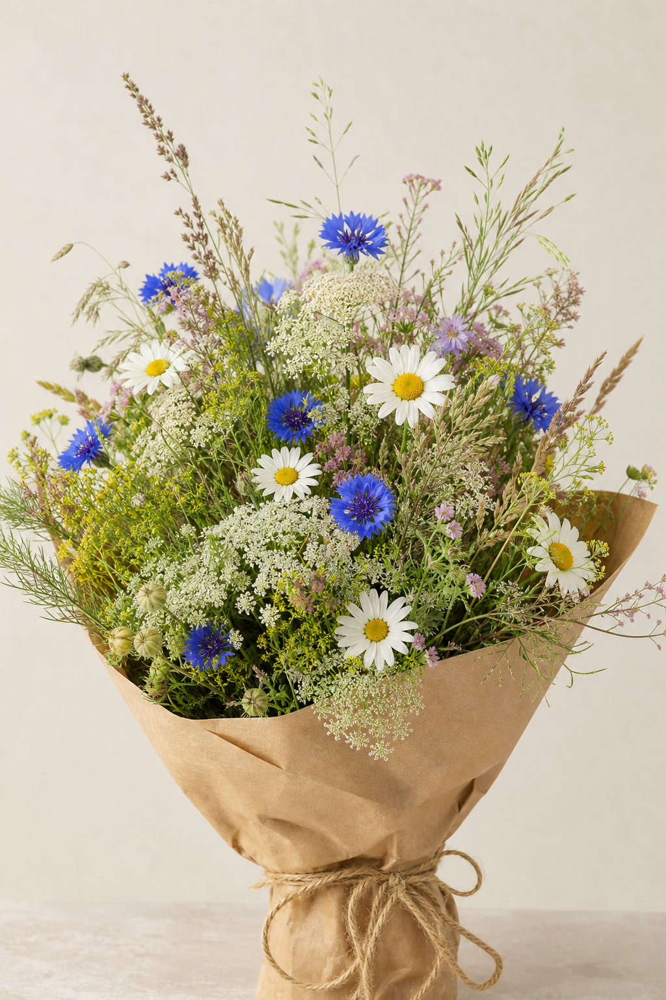
Wildflower Field
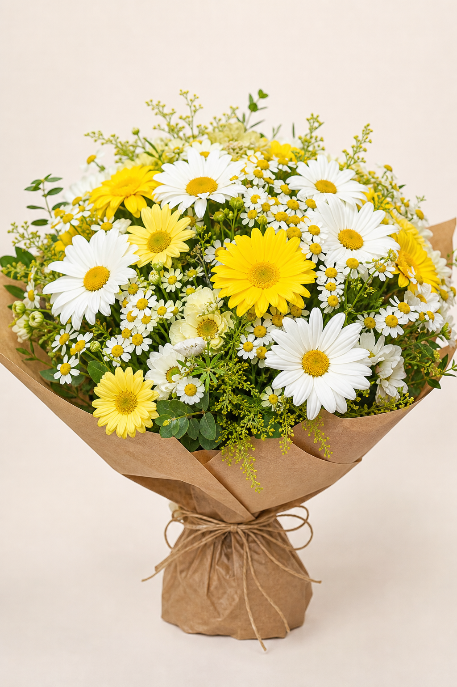
Cheerful Daisy Mix
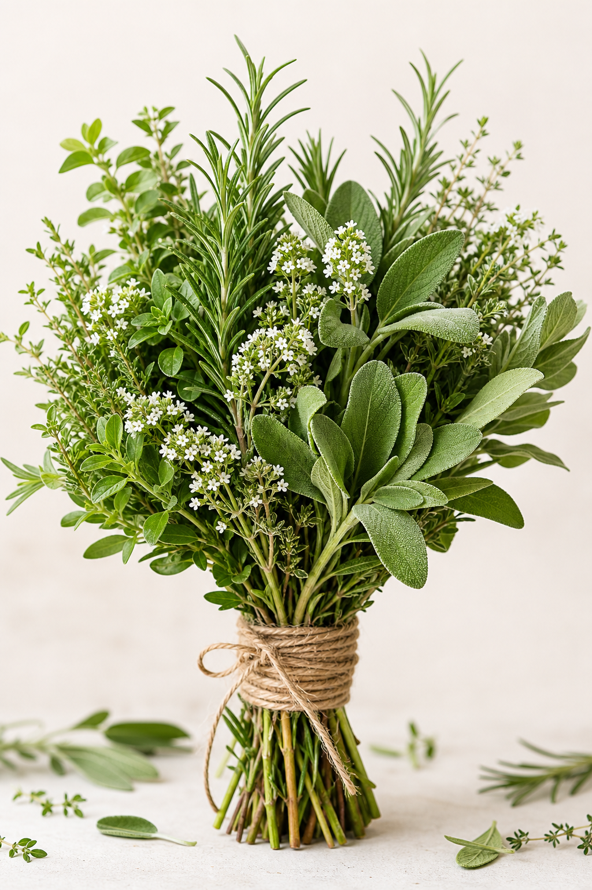
Garden Herb
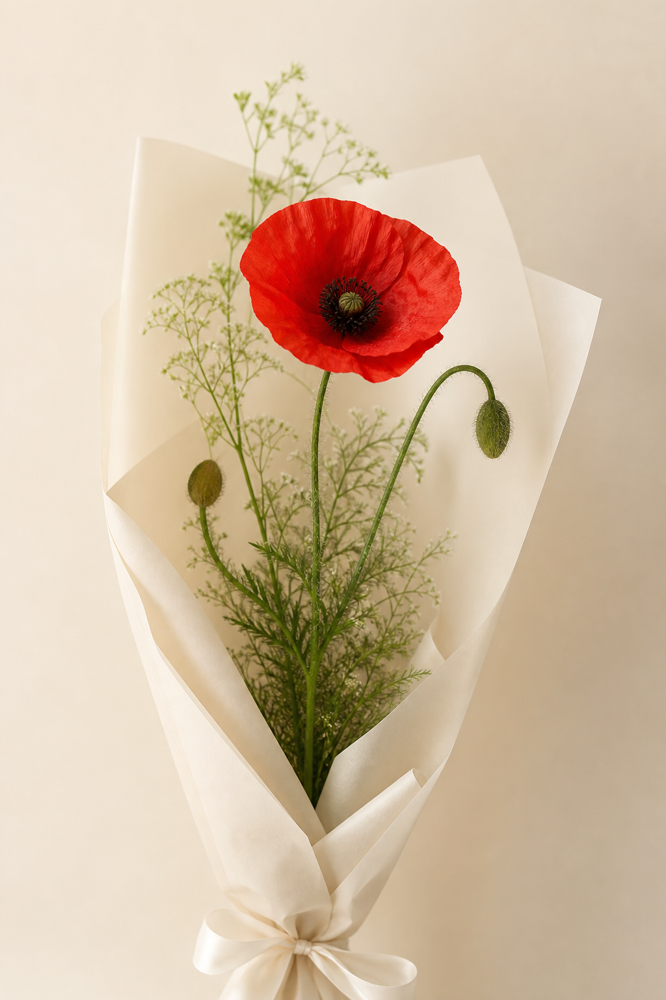
Single Stem Poppy
The design consequence
Start with an honest photographic print or plate. Do not fake a transparent cutout with blending, crop away half the bouquet, or animate pre-rendered wrapping as if it were separate paper. Test any future isolated imagery as a separate asset decision.
The peony clouds are a different visual world from the wrapped roses. The lily image includes fixed sympathy wording that cannot follow the sender's language or edits. Neither issue requires deleting a bouquet or breaking old links.
04 / Review gate
Agree on the world before drawing the rooms.
Recommendation: tangible paper, botanical color, clear editorial structure, honest photographic plates. Warm without looking like a wedding shop; quiet without becoming sterile. Handwriting belongs to a personal note, not every navigation label.
Show the actual gift early; avoid the abstract headline / badge / card-grid formula.
Keep five clear-purpose steps. Extra choices stay secondary, not extra mandatory tasks.
Keep current bouquet IDs, customizations, guest links, drafts, and dark appearance compatible.
In D02, compare a shared tabletop arrangement with a more editorial, sequential presentation. Neither is designed or selected yet.
Reference vocabulary approved with the contemporary/colorful refinement above. Next approval: select or revise one of the two D02 concepts. No full-site implementation at this gate.